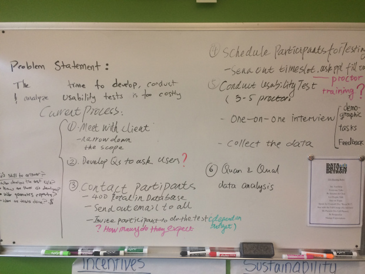
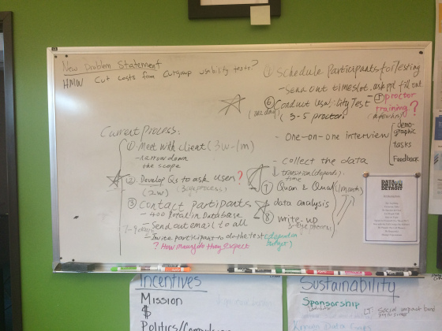
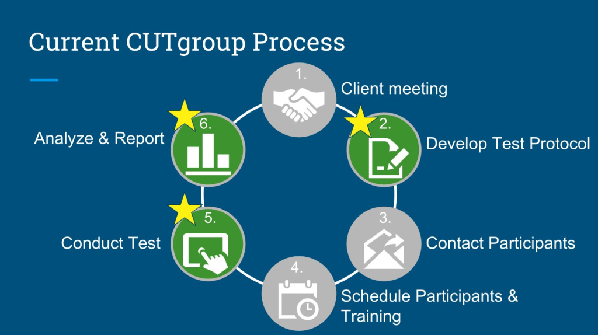
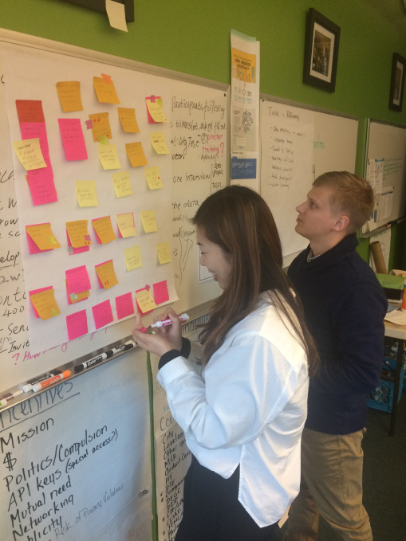
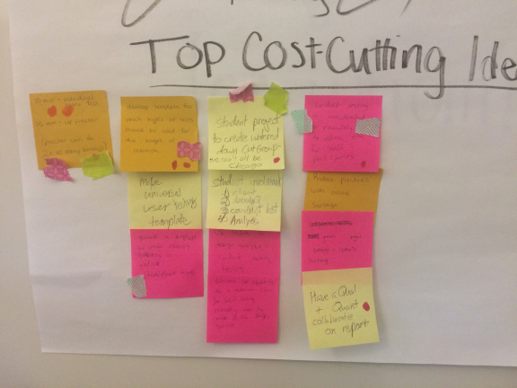
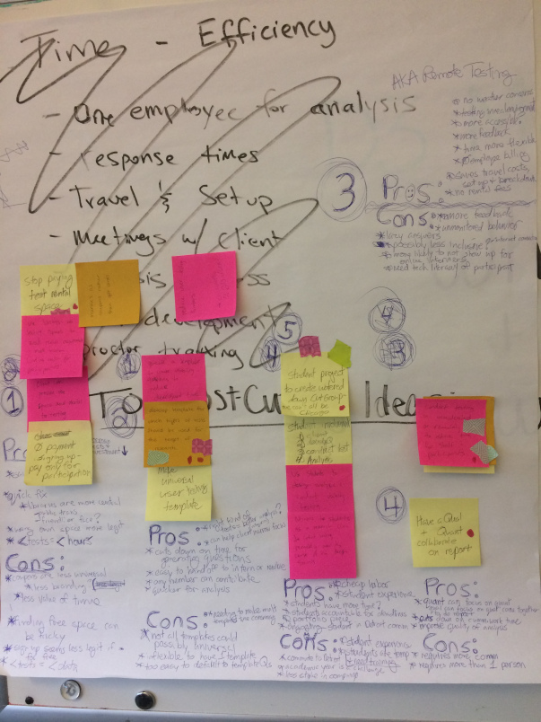

Citizen Usability Testing
Client
Data Driven Detroit
 Role
Role
Consulting Team Member
 Duration
Duration
October 2018
Skills: Consulting, Usability Testing, Workflow Diagramming
Problem:
The current process to develop, conduct, and analyze usability tests is too costly for the company to sustain.
The first step in solving this problem was identifying, in detail, all of the steps involved in the current usability testing process.
Given that this organization is a non-profit, and the usability testing feature is a free supplement that clients can decide to participate in, the budget for our project was very strict. So, we had to interview the employees of Data Driven Detroit (D3) to generate concrete numbers for each area that contributed to the overall cost.
To disambiguate the procedure, our team put together an infographic to clearly define each step within the Citizen Usability Testing Group (CUTgroup) process.

Once our group laid out each step, we had to identify points in which there was potential to cut expenses.

To do so, we brainstormed dozens of ideas and targeted the most plausible ones to continue with.
After discussing the pros and cons of each potential solution, our team decided on five categories of ideas to cut expenses. Those categories included immediate fixes, user test templates, remote testing, division of labor, and student involvement.
I personally took a leadership role in developing the division of labor aspect, as the current process at D3 involved one employee fulfilling the majority of the tasks. In my proposed solution, the creation of usability testing questions, analysis of data, and generation of the report would be spread out amongst multiple company members. This allows people to specialize in their area of expertise and also cuts down on the overall time for the report to return to the client.
The final step before creating our deliverable was listing out in-depth pros and cons for each proposed solution. This involved noting the stakeholders involved for each option and how the interests of the company would be fulfilled.
Our final deliverable was a presentation to Data Driven Detroit executives that discussed our proposed solutions for cutting costs in their Usability Testing process. Our efforts in this project resulted in a concrete procedure for conducting usability tests in a more sustainable, efficient way to save costs for the company.
Solution:
Connect university students with clients trying to conduct usability tests to give students experience and provide client with results. Simultaneously, template usability testing for desired focus, divide tasks between team members, and conduct some tests remotely.